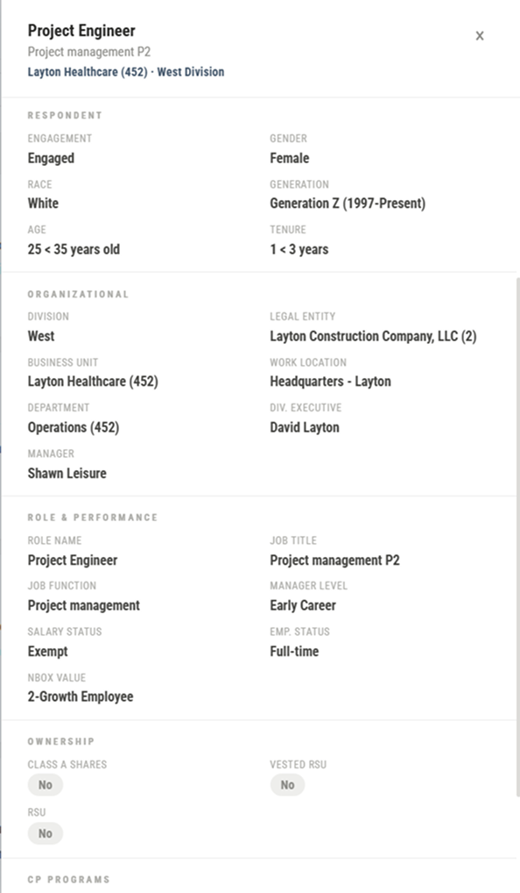
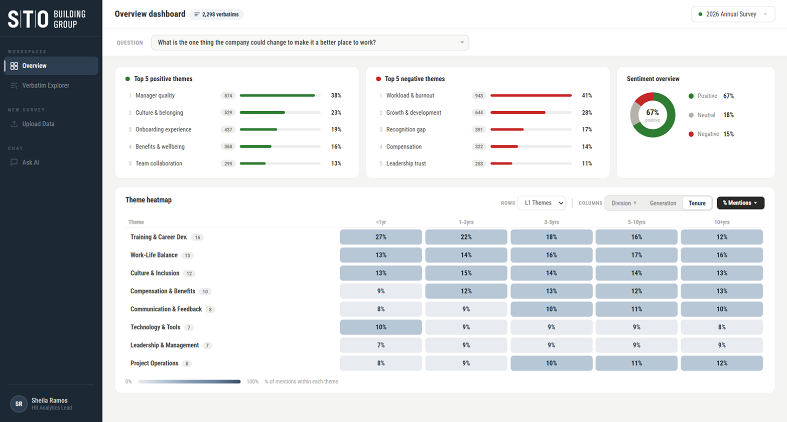
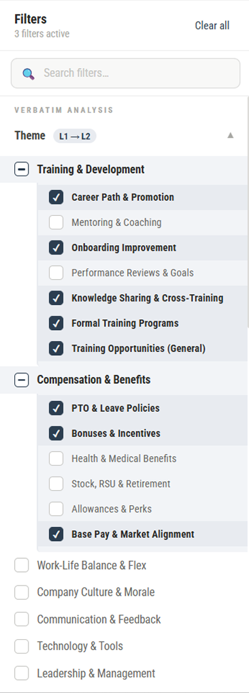
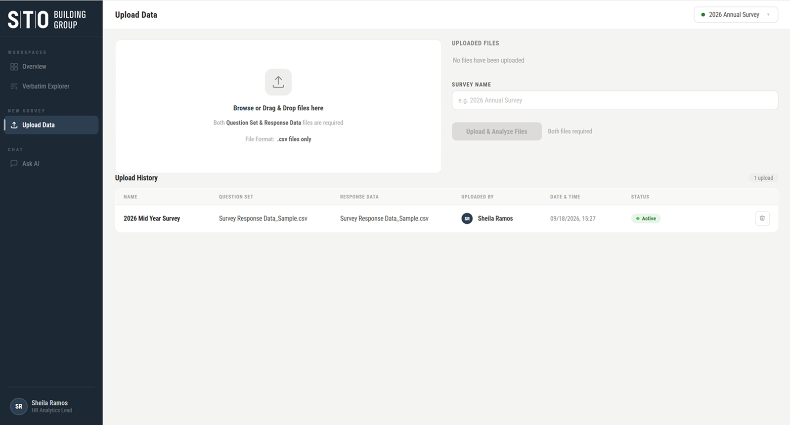
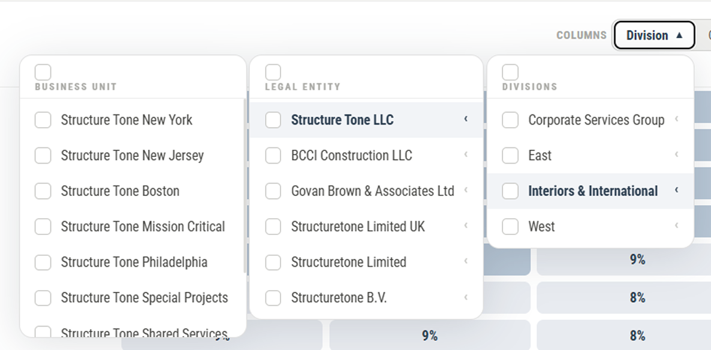
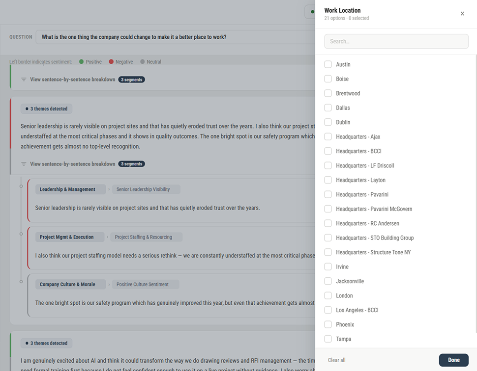
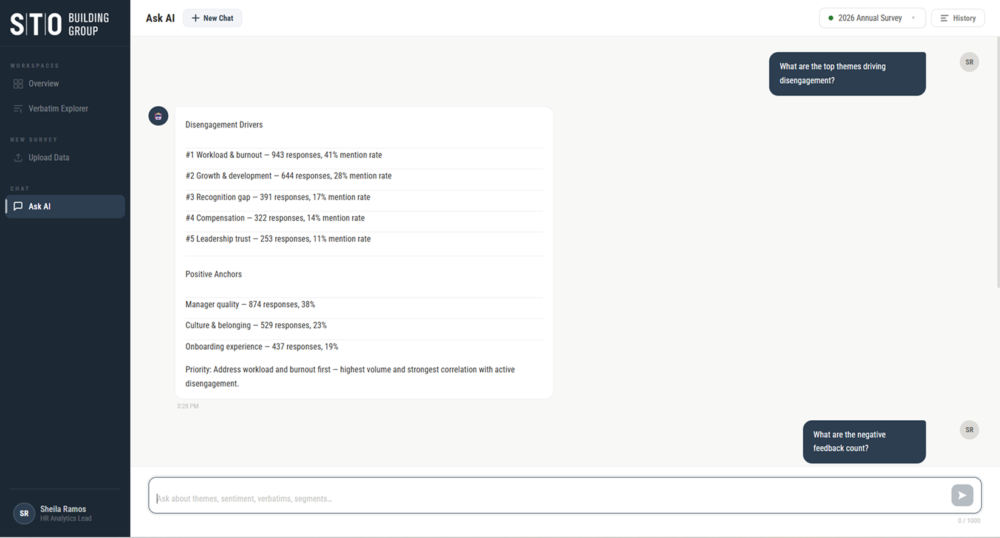

What did I build?Employee Feedback AnalyticsBuilt as an internal decision-support tool for a construction group, the application processes annual employee engagement survey data across thousands of respondents spanning multiple divisions, legal entities, and business units. It bridges the gap between raw employee feedback and leadership action — giving HR analysts, division heads, and executives a shared, real-time view of what their people are saying, without waiting for manual reports or external consultants to interpret the data.
ProblemPreviously, this construction company’s teams were managing and reviewing thousands of employee survey responses manually — typically in Excel — with no structured way to classify themes, track sentiment, or compare results across divisions, demographics, or tenure groups. This made it difficult to surface actionable insight at scale.
GoalTo replace manual Excel-based survey analysis with an AI-powered platform that automatically classifies employee responses into themes and sentiment — enabling HR teams and leadership to explore verbatims, compare engagement across segments via a heatmap, and query the data through a built-in AI assistant, no technical knowledge required.
What powered the process?Tools Used
Claude
ChatGPT
Perplexity
Figma
How did I get there?Process to Achieve the Goal
Step 01Requirements Gathering & Analysis
•Pulled core requirements from the client brief
•AI classification, dashboard, verbatim explorer, AI assistant
•Quick secondary research to validate users and needs
Step 02Project Setup
•Loaded response data and the full brief as inputs
•Set enterprise SaaS rules and the design system
•Defined Figma-ready output specs
Step 03Visualize – Prompt – Prototype
•Mapped IA and sketched screen-wise wireframes
•Prompted an AI design tool with wireframe references
•Refined in Figma, then re-aligned the AI output
Step 04Usability Testing – Feedback – Iteration
•Shared the prototype with stakeholders for review
•Collected usability feedback from real usage
•Iterated — e.g. question-wise dashboard insights
What made the difference?Key Decisions
01Moving Beyond a Single-Sentiment and Theme AI Classification
DecisionA single verbatim can contain multiple perspectives, where the sentiment and/or L1-L2 theme may change within the same statement. Instead of assigning one sentiment or theme to the entire verbatim, the AI analysis identifies these shifts and segments the verbatim accordingly, with each segment receiving its relevant sentiment, L1 theme, and L2 theme.
UX ImpactThis preserves the full context of the employee’s verbatim while making its underlying meaning easier to analyze. Users can first understand the complete verbatim and then expand it to explore the segmented insights without being overwhelmed by details upfront. The approach makes AI analysis more accurate, transparent, and actionable while keeping the experience easy to scan.
Trade-offShowing every segmented insight by default could make a verbatim feel fragmented and visually heavy. An expandable/collapsible structure keeps the original Verbatim as the primary view, while detailed AI interpretation remains available when deeper analysis is needed.
0:00 / 0:00
02Keeping AI Flexible, With Human Control
DecisionAI-generated themes and sentiments may not always align with an analyst's interpretation, so users can manually adjust classifications when needed. To keep these controls from dominating the view, the edit option stays hidden until hover. Changes require an explicit confirmation step, and every update is recorded in History with the user, date, time, and changed value.
UX ImpactThe experience establishes a human-in-the-loop model where AI accelerates analysis without taking away control. Contextual editing keeps the interface clean while preserving flexibility, confirmation reduces accidental changes, and a detailed audit trail creates transparency and accountability around AI-assisted decisions — analysts can correct AI output without compromising traceability.
0:00 / 0:00
03Making AI Insights Actionable
DecisionTurn dashboard insights such as sentiment, top themes, and heatmaps into interactive entry points, rather than static visualisations. Clicking an insight takes users straight to the relevant feedback with the appropriate context and filters already applied.
UX ImpactThis creates a direct path from insight to evidence, eliminating unnecessary navigation and repetitive filtering. Users move from “What is happening?” to “Why is it happening?” with minimal effort, making the dashboard more actionable and accelerating deeper analysis.
0:00 / 0:00
Where did it land?Final Product Solution







Thousands of voices, one clear signal — when AI does the heavy lifting, design gets to do the listening.